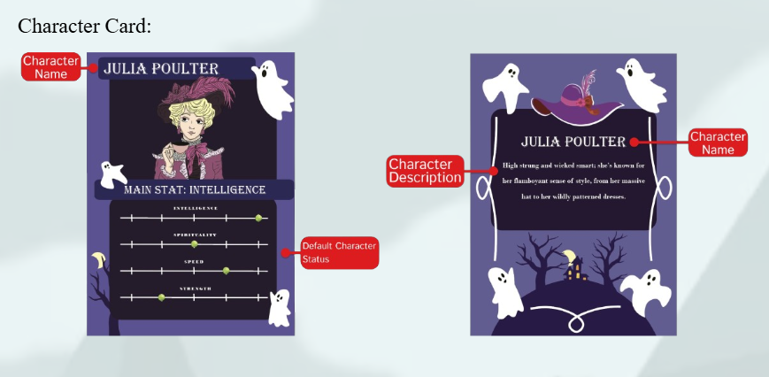
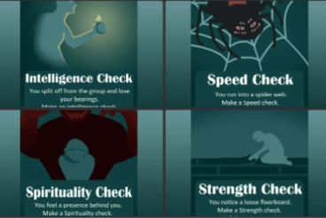
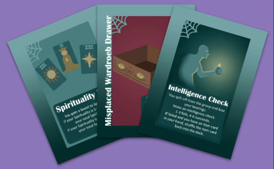

Haunted


Haunted is a multiplayer board game where players work together to prepare the Poulter family home before a major open house while dealing with the ghost of Great Aunt Patricia. Clean up her ghost’s mess alongside the rest of the Poulter family while keeping a close eye on your fellow players — Aunt Patricia could possess anyone at any moment, including you!
• Team Project
• Role: Project Manager & Game Designer
• Built in Tabletopia
• 4 Week Development

We as a team decided on what kind of game we wanted to design along with the roles for the project. As a project manager and game designer, I organized and documented initial game ideas and feature concepts throughout the planning process. Early discussions focused on what we wanted to create and how to accomplish our team goals, along with the type of experience we wanted to create for players. In the end, we decided that our goals centered around developing a replayable room exploration game inspired by classic horror settings.
I also made sure that each team member was assigned a role that suited their strengths and interests rather than placing them in positions they did not want to work in. Throughout development, I regularly checked in with team members each week to discuss their progress and contributions.


The theme of Haunted was designed around classic horror settings with a mix of suspense. Haunted environments, paranormal events, and hidden possession mechanics were used to create tension and paranoia between players while maintaining a stylized horror atmosphere throughout gameplay.

A default character stat system was implemented to give each character unique strengths and gameplay roles. Characters are assigned varying values across Intelligence, Spirituality, Speed, and Strength, with each attribute affecting gameplay interactions such as movement, card management, buff effectiveness, and other player actions.

Modifier and check cards were created to add events and challenges that can affect gameplay. These cards can change character stats and outcomes, encouraging players to adapt to different situations throughout the game.
The core gameplay focuses in Haunted is creating tension and uncertainty through hidden information and player interaction. Players can be affected by modifier cards that alter situations and influence gameplay outcomes, creating unexpected challenges throughout the match. Hidden roles and progression mechanics encourage players to question each other's intentions, while stat check systems require players to meet character requirements to overcome events and challenges, creating a more strategic and unpredictable gameplay experience.

As a project manager, I was responsible for organizing and submitting written documentation throughout development while tracking the team's design process and progress. Documentation was used to record gameplay ideas, design decisions, and changes made throughout production, allowing the team to reflect on how the game evolved through iteration and feedback over time.
A complete rulebook was developed to improve player understanding and accessibility during gameplay. The rulebook organized gameplay mechanics, card interactions, turn structure, and win conditions into a clear format so new players could learn the game more efficiently while reducing confusion during playtesting sessions. In addition, a game trailer was created to showcase the core gameplay experience, introduce the game’s theme and mechanics, and provide players with a quick overview of what to expect.
Project Documentation is available Here | The Rulebook is also available Here
©2024 by Shion Lovelace.
All content, logos, and trademarks are the property of their respective owners.